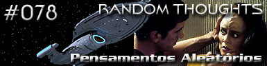
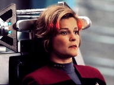
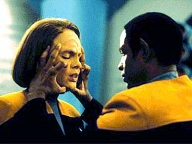
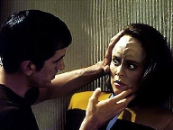
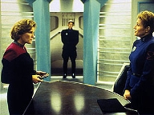
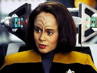

|
Voyager
Temporada 4

Anlise do episódio por
Daniel
Sasaki



| MANCHETE
DO EPISDIO Data Estelar: 51367.2.  Em um mercado no planeta dos Mari, uma raa teleptica, um homem chamado Frane colide com B'Elanna. Em seguida, France ataca violentamente outro homem. Durante interrogatrio, a tenente admite inspetora Nimira que pensou em agredir France quando ele tombou com ela. Para sua surpresa, a Klingon presa por cometer o crise de pensamento violento agravado resultante em grave prejuzo fsico.B'Elanna descobre que ter de passar por um procedimento cirrgico para identificar e remover as imagens ofensivas de sua mente, assim como Frane. Janeway protesta quando informada de que há risco de dano neurolgico e designa Tuvok para examinar as evidncias. Eles averiguam que Frane tem um histrico de prises por mentalizar pensamentos violentos. No entanto, Nimira afirma que ele foi curado atravs das sessões de "limpeza". No mercado, uma mulher Mari woman capta os pensamentos de B'Elanna e mata uma vendedora de frutas.  Guill nega responsabilidade pelo ataque no mercado, mas o oficial de segurana pede que ele se apresente a Nimira para interrogatrio. Neste momento, enquanto a dupla interceptada por dois conspiradores do Mari, tem incio o procedimento com B'Elanna. Tuvok engana
Guill em um elo mental. Em vez de transferir pensamentos hostis, inflige uma dor
que o desabilita. Em seguida, leva-o para a Voyager, onde Janeway convoca Nimira
para apresentar as provas. A inspetora toma conhecimento dos fatos antes que se
consume a operao em B'Elanna. "Random Thoughts" um segmento mediano
da temporada. Nada tem de extraordinrio. Pelo contrário. Retrata mais um planeta
visitado pela Voyager, onde se desenvolve um conflito. Ao ser solucionado, tudo
fica para trs e a série continua como se nada tivesse acontecido. De certa forma,
tem o mesmo impacto que "Year of Hell".
A diferena que no existe um "reset" oficial.  Eis
o primeiro questionamento do telespectador: por que a capitã no foi informada
de que pensamentos violentos poderiam causar tanto incmodo? Por que no procurou
saber das leis locais? Parece que o erro partiu dos dois lados. Tambm os Mari
deveriam ter advertido os visitantes. Sem dvidas, a Voyager no foi a primeira
nave a visit-los e soa igualmente difícil acreditar que problemas do tipo no
tenham ocorrido antes. Afinal, o Quadrante Delta no exatamente um oceano de
guas calmas. Outra pergunta inevitvel: por que
os oficiais Mari no foram afetados por outros pensamentos de B'Elanna, quando
ela foi presa e, depois, imobilizada para a operao? De certo, a engenheira-chefe
mais irritadia da Frota deve ter querido "quebrar uns ossos alheios".  A interao entre Tuvok e Nimira chama a atenção. Os Mari no so viles. Nimira uma mulher razovel e profissional. No deseja ser injusta e enfrenta um dilema legtimo. H um respeito entre ela e o Vulcano. A dupla acaba roubando a cena. Todos os outros personagens acabam secundrios, incluindo a própria B'Elanna. Alis, parece que o segmento se foca mais em Tuvok do que na Klingon. Desnecessria mesmo a sub-trama, em que a "amiga" de Neelix assassinada. O fato nada acrescentou história. A reação do Talaxiano deixou a desejar. Parece ter sido includa apenas para ele dizer a Tuvok que buscasse a verdade em honra vtima. Bom, também ajudou a levantar a dúvida sobre a permanncia do pensamento pelo mercado aps a priso de B'Elanna.  A história da semana termina com o timo dilogo entre Seven e Janeway. Quando a capitã reitera a missão da Voyager, de conhecer novas civilizaes, está restaurando a ideia primeira de Jornada. A seriedade de Seven quebrada pelo olhar irnico da superior. A ex-Borg tem bons fundamentos ao apontar que a viagem de volta para a Terra seria mais curta e livre de incidentes se a nave traasse um curso direto que evitasse contatos com culturas alienígenas. Mas no disso que tudo se trata. Mais do que um grupo de humanos perdidos, a tripulao composta por oficiais da Frota Estelar. Isso sim Jornada nas Estrelas.
Neelix - "I mean, you're involved now.
You won't be availing yourself of all the beautiful, fascinating, and very open-minded
Mari women." Doutor
- "You can return to duty, Lieutenant. Though perhaps with one or two fewer
violent engrams in the fiery head of yours." Janeway
- "We seek out new races because we want to, not because we're following
protocols. We have an insatiable curiosity about the universe." Janeway
- "I dread the day when everyone on this ship agrees with me."
Direo
de Alexander Singer Elenco: Kate
Mulgrew como Kathryn Janeway Elenco
convidado: |